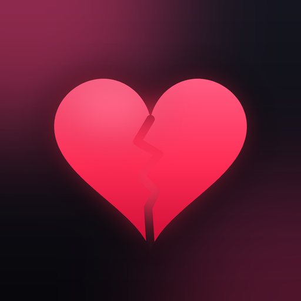

Toxic Check
Flörtünden ya da eski sevgilinden gelen mesaj ne kadar toksik? Mesajı yapıştır; toksiklik skorunu, kırmızı bayrakları ve ne cevap vermen gerektiğini saniyeler içinde öğren.
iPhone için · iOS 16 ve üzeri
Nasıl çalışır?
- Mesajı kopyala, uygulamaya yapıştır.
- Yapay zeka mesajı manipülasyon, suçluluk yükleme, gaslighting, love bombing gibi kalıplar için tarar.
- 0-100 arası toksiklik skoru, kırmızı bayraklar, yeşil bayraklar ve sınır koyan bir cevap önerisi alırsın.
İlk analiz ücretsiz. Sınırsız analiz için Toxic Check Premium (aylık veya yıllık).
Destek
Soru, öneri veya sorun bildirmek için: erenoruk2@gmail.com
Aboneliğini yönetmek veya iptal etmek için iPhone'unda Ayarlar → Apple Kimliği → Abonelikler bölümüne git.
Toxic Check bir yapay zeka analizidir; profesyonel psikolojik destek yerine geçmez. Kendini güvende hissetmiyorsan güvendiğin biriyle veya bir uzmanla konuş.